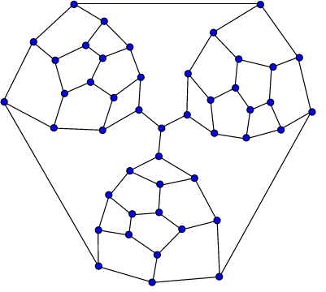
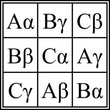
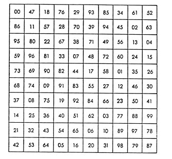
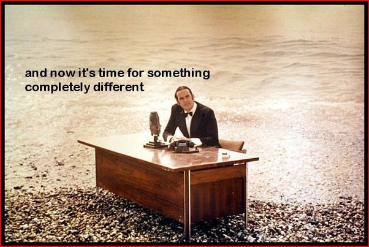

What are some examples of non-trivial or difficult counterexamples to mathematical conjectures?
Oh, this is going to be fun.
First, a point of terminology: there are no “counterexamples to mathematical theories”, because a theory isn’t a single statement that can be refuted with a counterexample. Nor are there counterexamples to mathematical theorems, because theorems are true.
There do exist interesting, non-trivial and sometimes complicated counterexamples to mathematical statements which, of course, aren’t theorems. Many of those statements have stood as conjectures for a while, until someone found a counterexample.
Some of the following counterexamples are profound, some mundane. Some are easy to verify, some aren’t. Some are in Number Theory, some in the Theory of Computation, some in Logic and some in Topology (and maybe a few other fields, we’ll see).
Claim: Every number of the form 2^{2^n}+1 is prime. (False!)
This was a genuine conjecture made by Pierre de Fermat, who verified that 2^2+1=5, 2^4+1=17, 2^8+1=257 and 2^{16}+1=65537 are indeed primes.
The counterexample comes precisely at the next number, 2^{32}+1=4294967297=641 \times 6700417. This may seem trivial by today’s standards, but when Euler found this factorization it was quite a clever feat (he did this by recognizing that 641=2^9+2^7+1 must divide that number).
In fact, Fermat was about as wrong about this as can be: as far as we can tell, past n\geq 5 none of the numbers 2^{2^n}+1 is prime. We don’t know this for sure, though. We know that 2^{2^{32}}+1 is composite (as are all smaller numbers of this form), but nobody knows for sure if 2^{2^{33}}+1 is or isn’t prime.
Claim (Tait’s Conjecture): Every planar, 3-connected cubic graph has a Hamiltonian cycle. (False!)
This was proposed in 1884 by P. G. Tait as a way to prove the famous 4-Color Theorem: Tait showed (quite easily) that the 4-color theorem follows from this statement. It took more than 60 years for Bill Tutte to find this counterexample:

This graph is obviously planar, it is obviously cubic (every vertex has exactly three neighbors), it is slightly less obviously 3-connected (it cannot be separated by removing one or two vertices), and it’s not Hamiltonian (there’s no way to visit all the vertices in one continuous path with no loops). This last part isn’t at all obvious but it’s not super difficult to prove, either. It’s finding this graph that’s the challenge.
Claim: If you add up some kth powers to get a kth power, you must have added at least k numbers. (False!)
This conjecture was made by none other than Leonhard Euler, as a certain extension of Fermat’s Last Theorem.
Euler observed that it’s easy to add up two squares to get a square, as in 3^2+4^2=5^2, but you can’t add two cubes to get a cube: a^3+b^3=c^3 has no solution in positive integers (This is the case n=3 of Fermat’s Last Theorem, which Euler was the first to actually prove.) You can, however, add up three cubes to get a cube, for example 3^3+4^3+5^3=6^3. Well, thought Euler, there’s a pattern here: you can add up k kth powers to get a kth power, but you can’t get away with fewer than k of them.
This isn’t true, but it took almost 200 years to find a counterexample.
The first counterexample was found in 1966 by Lander and Parkin, using a computer search. They discovered that
27^5+84^5+110^5+133^5=144^5.
You can find their original paper here. In 1966, this was quite a feat. Nowadays, you can find this example in just a few minutes of coding and running your code on a standard laptop, or even a smartphone (Try it!).
This shows that Euler was wrong when k=5. He already knew that he was right for k=3. What about k=4?
That took considerably more ingenuity than a mere computer search. In 1986, 20-year-old Noam Elkies used the theory of elliptic curves (plus some computer work) to find infinitely many counterexamples to Euler’s conjecture for fourth powers. The smallest one is
2682440^4+15365639^4+18796760^4=20615673^4.
Finally, for k \geq 6, the situation is still unknown. It is possible, though in my mind unlikely, that Euler’s conjecture holds for 6th powers and beyond.
We aren’t quite done with Euler, though.
Claim: There are no Orthogonal Squares of even order which is not divisible by 4. (False!)
Look at the following array of cards.
A♠ K♥ Q♦ J♣
Q♣ J♦ A♥ K♠
J♥ Q♠ K♣ A♦
K♦ A♣ J♠ Q♥
See how clever this is: every row contains each rank (J, Q, K, A) exactly once, as does each column. Also, every row contains each suit (♠,♥,♦,♣) exactly once, as does each column. But moreover, the two arrangements of rank and suits are so mixed up that no card appears twice in the entire array: the Jack of Hearts appears just once, as does the Queen of Spades, and so on for all possible combinations.
Without this last “orthogonality” condition, what you’d have here is just two superimposed Sudoku puzzles of order 4. But the requirement to have none of the pairs appear twice makes it a very hard puzzle, hard enough to interest the great Euler. He used latin and greek letters to build those arrays, earning them then name Graeco-Latin square. Here’s such an array of order 3.

Euler was able to construct such arrays for every odd order and for every order divisible by 4. It’s easy to see that there’s no such array for order 2 (exercise!), and Euler was unable to build one of order 6, so he proposed that the orders 2, 6, 10, 14, … are impossible. Those are the even numbers that aren’t divisible by 4.
Euler was wrong about that, too, and once again it took more than 150 years for this conjecture to be refuted (at this point I should probably mention that Euler was one of the most profound and creative mathematicians of all time, and those conjectural snafus were quite uncharacteristic of him.)
Euler was right about order 6, though it was only in 1901 that this was proven. But in 1959, Raj Chandra Bose and Sharadchandra Shankar Shrikhande constructed an orthogonal array of order 22. E. T. Parker found an example of order 10, and later the three of them proved that such arrays exist for every n except the gaps at n=2 and n=6.
Here’s an orthogonal array of order 10: every 2-digit combination appears exactly once, and every row and every column contain every digit in both the first and second places.


Claim: There are no Turing degrees between 0 and 0′. (False)!
The theory of Turing degrees is a truly beautiful idea. It studies the computational aspects of sets of numbers, and reveals an amazingly intricate structure from a few simple definitions. Here are the minimum basics we need.
A set of natural numbers is called computable if you can write a computer program that checks for membership in the set. Since you can write a computer program that checks if a number is prime, the set of primes is computable. Since you can write a computer program that checks if a given number is even and is the sum of two primes, the set of even numbers which are the sum of two primes is computable (We don’t know if this set contains all even numbers greater than 2, which is Goldbach’s conjecture; but the set is nevertheless computable). The family of all computable sets is called 0.
Not every set of natural numbers is computable, because there are far too many sets and far too few possible computer programs to detect them. As a concrete example of a non-computable set, consider the set of numbers which encode (in some way) computer programs which halt. No computer program can correctly determine if a number is or isn’t in the set .
Now, suppose you are given a magical gadget which can, actually, tell you if a program halts or not. Using this gadget as “black box” (or, in more common parlance, an “oracle”), you can now do better and write computer programs that decide membership in more sets than just the computable ones. Those sets are said to be “computable using a halting oracle”, and the family of those sets is denoted 0′. It also carries the captivating name “The Turing jump of 0”.
Emil Post asked the question: are there sets that are harder to verify than 0 but easier to verify than 0′? A bit more formally, is there a set which is not computable but is computable with a halting oracle, and which is itself not powerful enough to serve as a halting oracle? It seems a bit hard to imagine that such intermediate-level problems exist.
But they do. Richard Friedberg and Albert Muchnik, independently, developed the idea known as the Priority Method and constructed such peculiar sets. This opened a whole new field of study, exploring the rich structure of Turing degrees and their partial order.
Claim: There are no models of ZFC which violate the Continuum Hypothesis. (False!)
Georg Cantor, the creator of the Theory of Sets, wondered if there’s an uncountable set of real numbers which cannot be put in correspondence with the real numbers. In other words, is there any cardinality between \aleph_0 and 2^{\aleph_0}?
This very famous conjecture became known as the Continuum Hypothesis (CH). In 1938, Kurt Gödel proved that this hypothesis is consistent with ZFC, which is the same thing as saying that there’s a model of ZFC – A “universe of sets” – in which CH is true. Some people believed this was an indication that CH is, indeed, true, which means that there are no models of ZFC in which CH is false.
In fact, people generally had no idea how to build models of ZFC other than the “natural” ones like L which is the model built by Gödel. But Paul Cohen succeeded in doing just that, inventing the fundamental technique of Forcing in 1963. For this he was awarded the Fields medal.
People don’t usually think of a model of ZFC+\negCH is a “counterexample”, but formally it can be regarded as one: it is a counterexample to the claim that ZFC implies CH, namely that there are no models of ZFC where CH is false. There are, in fact, such models, so Cohen built what might be described as a counterexample.
Claim: An uncountable group must have an uncountable proper subgroup. (False!)
It’s very easy to construct uncountable groups: the circle, the torus, the group of n\times n real matrices of determinant 1, and so on. There are tons of such groups, and if you look at them, you’ll see that they all insist on containing uncountable subgroups. Is it possible to create an uncountable group without uncountable proper subgroups?
It’s possible, but very far from easy. The first counterexample, dubbed a “Kuroš monster”, was found by Saharon Shelah and published here. It’s beyond my abilities to even sketch the construction.
Claim: There are no books dedicated exclusively to counterexamples. (False!)
Topology has so many counterexamples, there’s a whole book about them, and this book is so famous, there’s a Wikipedia article about it. Following its success, other books with similar titles popped up in other fields of mathematics.
Some of the standard counterexamples in topology are the Cantor set, the long line and the Hawaiian earring. A slightly more exotic counterexample is the “Sticky foot” space constructed by Bing as an example of a countable, connected Hausdorff space. It’s easy to suppose that a connected Hausdorff space must be uncountable, because all the connected spaces everyone knows are uncountable, and clearly the finite ones won’t do. But such weird spaces do exist, and the Sticky Foot space is one of them.
Claim: This list is complete. (False!)
This claim is nonsense. There are tons of other counterexamples in math, each of which serves as a counterexample to that claim.